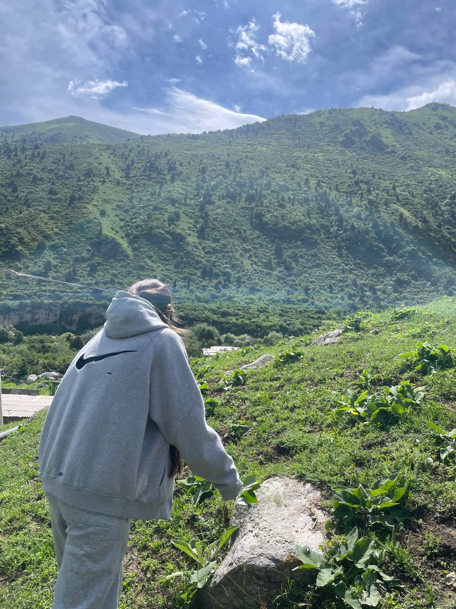

Моя история в веб-разработке

Frontend Developer
Привет! Меня зовут Айдана Акунова, и я начинающий веб-разработчик с большим энтузиазмом к созданию современных и функциональных веб-сайтов. Мой путь в IT начался с желания понять, как устроены веб-приложения, которыми мы пользуемся каждый день.
Я верю, что веб-разработка — это не просто код, а искусство создания удобных и красивых решений для пользователей. Каждый проект для меня — это возможность учиться, расти и создавать что-то ценное.
Сейчас я активно изучаю основы Frontend-разработки: HTML, CSS и JavaScript. Моя цель — не просто знать синтаксис, а понимать принципы создания качественных веб-приложений.
Моя главная цель — стать профессиональным Frontend-разработчиком, который создаёт качественные и современные веб-приложения. Я стремлюсь постоянно развиваться и осваивать новые технологии.
Углубить знания JavaScript и создать портфолио из 10+ проектов
Изучить React и современные фреймворки для разработки
Получить первую работу Frontend-разработчиком и расти в профессии
Помимо программирования
Люблю изучать новые технологии и читать статьи о веб-разработке
Изучаю UI/UX дизайн и создаю красивые интерфейсы
Работа над проектами вдохновляет меня на новые идеи
Посмотрите мои проекты или свяжитесь со мной